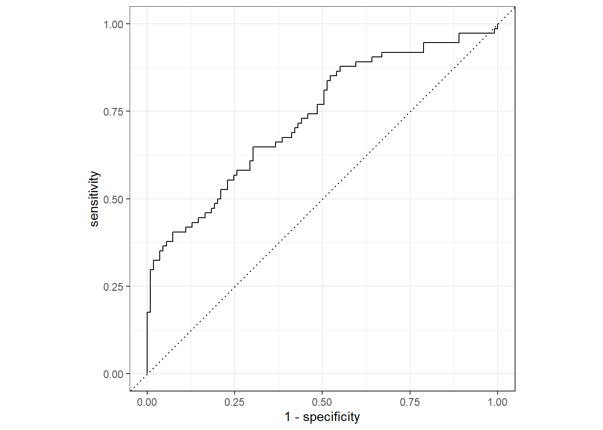
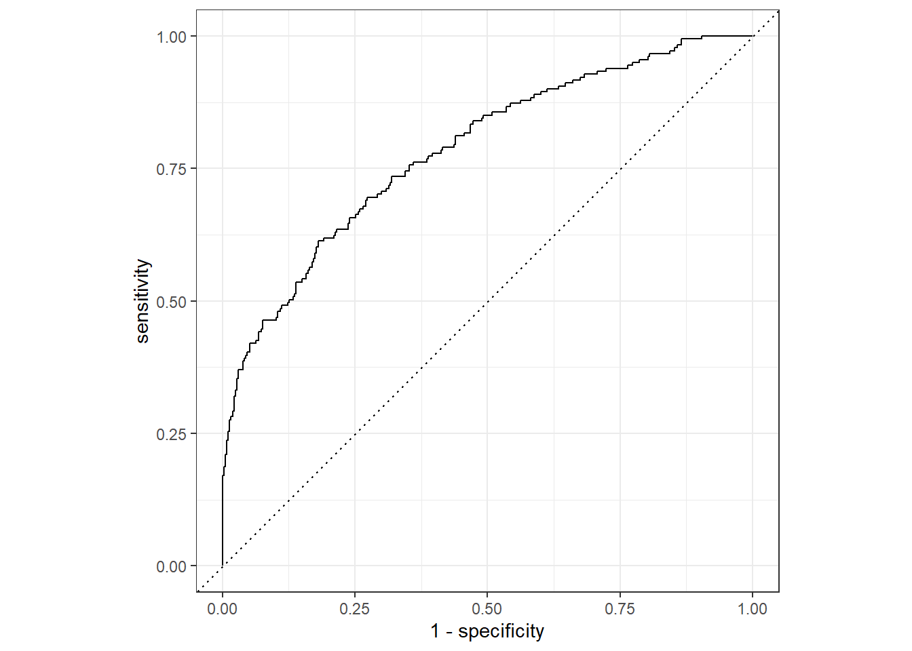

Nausea/Bodt Temperature: Cross-Validation, ROC-Auc, and RMSE
Dawson Dobash
10/19/2021
For this exercise, we will be using tidymodels but we will be evaluating models we create with the Nausea/Body Temperature: Model Fitting using Tidymodels tab. When evaluating the models, we used cross-validation, ROC-AUC, and RMSE.
To find the full analysis on this data set, click on this link and it will take you to my github repository.
Data Preparation
We will be reading in the same data cleaned from the processing script and all of the packages needed.
library(here)
library(tidymodels)
library(dplyr)
#path to data
data_location <- here::here("files" ,"processeddata.rds")
#load data.
data <- readRDS(data_location)Next we will split up the data into two called the training and test where the training data will be used to create the model and the test will be to use/implement the data to see how well the model fits the data.
#This is splitting the data using a proportion of 1/4 test and 3/4 training
split_data <- initial_split(data, prop = 3/4)
#This is assigning acutal data sets to the ones that were made
training <- training(split_data)
test <- testing(split_data)Workflow creation and Fitting for Full Model
Once we have our two data sets, we can now apply the recipe function to create a model from our categorical outcome with all predictors. Then we will create a logistic model for this recipe. This will all be applied to a workflow(). This workflow will be used to create a fit object for the model specified in the recipe.
#Creating the recipe for nausea
Nausea_recipe = recipe(Nausea ~ ., data = data)
#making a path for the logistic regression models
log_mod <- logistic_reg() %>% set_engine("glm")
#Creating a workflow that adds the model type and the recipe I previously made
Nausea_wrkflow <- workflow() %>% add_model(log_mod) %>% add_recipe(Nausea_recipe)
#Creating a fit object
Nausea_fit <- Nausea_wrkflow %>% fit(data = training)
#Looking at the details of this fitted model
Nausea_fit %>% extract_fit_parsnip() %>% tidy()## # A tibble: 38 x 5
## term estimate std.error statistic p.value
## <chr> <dbl> <dbl> <dbl> <dbl>
## 1 (Intercept) 1.70 9.08 0.188 0.851
## 2 SwollenLymphNodesYes -0.179 0.235 -0.761 0.447
## 3 ChestCongestionYes 0.214 0.253 0.846 0.397
## 4 ChillsSweatsYes 0.169 0.334 0.506 0.613
## 5 NasalCongestionYes 0.673 0.302 2.23 0.0260
## 6 CoughYNYes -0.297 0.612 -0.485 0.628
## 7 SneezeYes 0.130 0.254 0.512 0.609
## 8 FatigueYes -0.114 0.456 -0.249 0.803
## 9 SubjectiveFeverYes 0.119 0.273 0.434 0.664
## 10 HeadacheYes 0.258 0.347 0.742 0.458
## # ... with 28 more rowsEvaluating Model
Now that we have a fitted object, we will apply it to the test data and predict some values.
#We are predicting the values from the test data set with our fitted model
predict(Nausea_fit, test)## Warning in predict.lm(object, newdata, se.fit, scale = 1, type = if (type == :
## prediction from a rank-deficient fit may be misleading## # A tibble: 183 x 1
## .pred_class
## <fct>
## 1 No
## 2 No
## 3 No
## 4 No
## 5 No
## 6 No
## 7 Yes
## 8 No
## 9 No
## 10 Yes
## # ... with 173 more rows#This is also doing the same thing as the predict function but it is showing the prediction proportions at each observation
Nausea_aug1 = augment(Nausea_fit, test)## Warning in predict.lm(object, newdata, se.fit, scale = 1, type = if (type == :
## prediction from a rank-deficient fit may be misleading
## Warning in predict.lm(object, newdata, se.fit, scale = 1, type = if (type == :
## prediction from a rank-deficient fit may be misleadingNow that we have some predicted values, we can use the ROC and ROC_AUC to see how well the model fits the data.
#Fitting a roc curve and looking at the roc-auc to determine if the model is a good fit.
#Using the test data set
Nausea_aug1 %>% roc_curve(truth = Nausea, .pred_Yes, event_level = "second") %>% autoplot()
Nausea_aug1 %>% roc_auc(truth = Nausea, .pred_Yes, event_level = "second")## # A tibble: 1 x 3
## .metric .estimator .estimate
## <chr> <chr> <dbl>
## 1 roc_auc binary 0.733#Using the training data set
Nausea_aug2 = augment(Nausea_fit, training)## Warning in predict.lm(object, newdata, se.fit, scale = 1, type = if (type == :
## prediction from a rank-deficient fit may be misleading
## Warning in predict.lm(object, newdata, se.fit, scale = 1, type = if (type == :
## prediction from a rank-deficient fit may be misleadingNausea_aug2 %>% roc_curve(truth = Nausea, .pred_Yes, event_level = "second") %>% autoplot()
Nausea_aug2 %>% roc_auc(truth = Nausea, .pred_Yes, event_level = "second")## # A tibble: 1 x 3
## .metric .estimator .estimate
## <chr> <chr> <dbl>
## 1 roc_auc binary 0.784After finding out the roc value of both which hovers around the 0.75 range, this means the model will be useful and possibly good.
Workflow creation and Fitting for Main Outcome Runny Nose
We will repeat these steps but only using our main predictor which was runny nose. To do this the only difference we have to make is changing the recipe.
#Creating the recipe for nausea
Nausea_recipe2 = recipe(Nausea ~ RunnyNose, data = data)
#Creating a workflow that adds the model type and the recipe I previously made
Nausea_wrkflow2 <- workflow() %>% add_model(log_mod) %>% add_recipe(Nausea_recipe2)
#Creating a fit object
Nausea_fit2 <- Nausea_wrkflow2 %>% fit(data = training)
#Looking at the details of this fitted model
Nausea_fit2 %>% extract_fit_parsnip() %>% tidy()## # A tibble: 2 x 5
## term estimate std.error statistic p.value
## <chr> <dbl> <dbl> <dbl> <dbl>
## 1 (Intercept) -0.749 0.168 -4.45 0.00000851
## 2 RunnyNoseYes 0.0639 0.200 0.319 0.749Evaluating Model
Now that we have a fitted object, we will apply it to the test data and predict some values.
#We are predicting the values from the test data set with our fitted model
predict(Nausea_fit2, test)## # A tibble: 183 x 1
## .pred_class
## <fct>
## 1 No
## 2 No
## 3 No
## 4 No
## 5 No
## 6 No
## 7 No
## 8 No
## 9 No
## 10 No
## # ... with 173 more rows#This is also doing the same thing as the predict function but it is showing the prediction proportions at each observation
Nausea_aug3 = augment(Nausea_fit2, test)
#Fitting a roc curve and looking at the roc-auc to determine if the model is a good fit.
#Remember this is only using the runny nose main predictor
#Using the test data set
Nausea_aug3 %>% roc_curve(truth = Nausea, .pred_Yes, event_level = "second") %>% autoplot()
Nausea_aug3 %>% roc_auc(truth = Nausea, .pred_Yes, event_level = "second")## # A tibble: 1 x 3
## .metric .estimator .estimate
## <chr> <chr> <dbl>
## 1 roc_auc binary 0.498#Using the training data set
Nausea_aug4 = augment(Nausea_fit2, training)
Nausea_aug4 %>% roc_curve(truth = Nausea, .pred_Yes, event_level = "second") %>% autoplot()
Nausea_aug4 %>% roc_auc(truth = Nausea, .pred_Yes, event_level = "second")## # A tibble: 1 x 3
## .metric .estimator .estimate
## <chr> <chr> <dbl>
## 1 roc_auc binary 0.507We can see that if we only use runny nose as our predictor, the roc has a value around 0.5 which mean the model is not a good fit.
Continious Outcome Additions
Monica Chan: START
Add a code that repeats the previous steps, but fits linear models to the continuous outcome.
- All predictors: BodyTemp and all predictors
- Just the main predictors: BodyTemp and RunnyNose
NOTE: change metric. RMSE
Data reminder
Data objects to start with:
split_data #data split in a proportion of 1/4 test and 3/4 training.## <Analysis/Assess/Total>
## <547/183/730>#Assigned data sets from the split_data
glimpse(training)## Rows: 547
## Columns: 32
## $ SwollenLymphNodes <fct> No, No, No, No, No, Yes, Yes, No, Yes, No, No, Yes, ~
## $ ChestCongestion <fct> No, Yes, No, No, No, Yes, Yes, No, Yes, Yes, Yes, Ye~
## $ ChillsSweats <fct> Yes, Yes, Yes, Yes, Yes, Yes, No, Yes, Yes, Yes, Yes~
## $ NasalCongestion <fct> No, Yes, No, No, Yes, Yes, Yes, No, Yes, Yes, No, Ye~
## $ CoughYN <fct> No, Yes, Yes, Yes, No, Yes, Yes, No, Yes, Yes, Yes, ~
## $ Sneeze <fct> No, Yes, No, No, Yes, Yes, Yes, Yes, Yes, Yes, Yes, ~
## $ Fatigue <fct> Yes, Yes, Yes, Yes, Yes, Yes, Yes, Yes, Yes, Yes, Ye~
## $ SubjectiveFever <fct> No, Yes, No, No, No, Yes, No, Yes, Yes, Yes, Yes, Ye~
## $ Headache <fct> Yes, Yes, Yes, Yes, Yes, Yes, Yes, Yes, Yes, Yes, Ye~
## $ Weakness <fct> Moderate, Moderate, Mild, Severe, Moderate, Mild, Mi~
## $ WeaknessYN <fct> Yes, Yes, Yes, Yes, Yes, Yes, Yes, Yes, No, Yes, Yes~
## $ CoughIntensity <fct> Mild, Severe, Moderate, Moderate, None, Moderate, Mo~
## $ CoughYN2 <fct> Yes, Yes, Yes, Yes, No, Yes, Yes, No, Yes, Yes, Yes,~
## $ Myalgia <fct> Moderate, Severe, Moderate, Mild, Mild, Mild, Modera~
## $ MyalgiaYN <fct> Yes, Yes, Yes, Yes, Yes, Yes, Yes, Yes, Yes, Yes, Ye~
## $ RunnyNose <fct> No, Yes, No, No, Yes, Yes, Yes, Yes, Yes, Yes, Yes, ~
## $ AbPain <fct> No, No, No, No, No, No, No, No, No, No, Yes, No, No,~
## $ ChestPain <fct> No, Yes, No, No, No, No, No, Yes, No, Yes, Yes, No, ~
## $ Diarrhea <fct> Yes, No, No, No, No, No, No, No, No, No, No, No, No,~
## $ EyePn <fct> No, No, Yes, No, No, No, No, No, No, Yes, No, No, No~
## $ Insomnia <fct> Yes, Yes, No, No, Yes, No, Yes, Yes, Yes, No, No, No~
## $ ItchyEye <fct> No, No, Yes, No, Yes, Yes, No, No, No, No, No, No, N~
## $ Nausea <fct> No, Yes, No, No, No, No, No, Yes, Yes, No, Yes, No, ~
## $ EarPn <fct> No, No, No, Yes, No, No, No, No, No, No, No, Yes, No~
## $ Hearing <fct> No, No, No, No, No, No, No, No, No, No, No, No, No, ~
## $ Pharyngitis <fct> Yes, No, Yes, Yes, Yes, Yes, Yes, No, Yes, No, Yes, ~
## $ Breathless <fct> No, No, No, No, No, No, No, No, No, Yes, Yes, No, No~
## $ ToothPn <fct> No, No, No, No, No, No, No, Yes, No, No, No, Yes, No~
## $ Vision <fct> No, No, No, No, No, No, No, No, No, No, No, No, No, ~
## $ Vomit <fct> No, No, No, No, No, No, No, No, No, Yes, No, No, No,~
## $ Wheeze <fct> No, No, Yes, No, No, Yes, No, No, Yes, Yes, No, No, ~
## $ BodyTemp <dbl> 98.2, 99.0, 98.1, 102.6, 98.1, 98.2, 99.0, 98.7, 99.~glimpse(test)## Rows: 183
## Columns: 32
## $ SwollenLymphNodes <fct> Yes, Yes, Yes, Yes, No, Yes, No, Yes, Yes, No, Yes, ~
## $ ChestCongestion <fct> Yes, No, Yes, Yes, Yes, Yes, No, Yes, No, No, Yes, Y~
## $ ChillsSweats <fct> Yes, Yes, Yes, Yes, Yes, Yes, Yes, Yes, Yes, Yes, Ye~
## $ NasalCongestion <fct> Yes, No, Yes, Yes, Yes, Yes, Yes, Yes, Yes, Yes, Yes~
## $ CoughYN <fct> Yes, No, Yes, Yes, Yes, Yes, No, Yes, No, Yes, Yes, ~
## $ Sneeze <fct> Yes, No, No, Yes, Yes, Yes, No, Yes, Yes, Yes, Yes, ~
## $ Fatigue <fct> Yes, Yes, Yes, Yes, Yes, Yes, Yes, Yes, Yes, Yes, Ye~
## $ SubjectiveFever <fct> Yes, Yes, Yes, Yes, Yes, Yes, Yes, Yes, No, Yes, Yes~
## $ Headache <fct> Yes, Yes, Yes, Yes, Yes, Yes, Yes, No, Yes, Yes, Yes~
## $ Weakness <fct> Severe, Moderate, Moderate, Severe, Severe, Mild, Se~
## $ WeaknessYN <fct> Yes, Yes, Yes, Yes, Yes, Yes, Yes, Yes, Yes, Yes, Ye~
## $ CoughIntensity <fct> Moderate, None, Moderate, Severe, Moderate, Moderate~
## $ CoughYN2 <fct> Yes, No, Yes, Yes, Yes, Yes, No, Yes, No, Yes, Yes, ~
## $ Myalgia <fct> Severe, Mild, Moderate, Severe, Severe, Moderate, Mo~
## $ MyalgiaYN <fct> Yes, Yes, Yes, Yes, Yes, Yes, Yes, Yes, Yes, Yes, Ye~
## $ RunnyNose <fct> Yes, No, Yes, Yes, Yes, Yes, No, No, Yes, No, Yes, Y~
## $ AbPain <fct> No, No, No, No, No, No, Yes, No, No, No, No, No, No,~
## $ ChestPain <fct> No, No, No, Yes, No, No, No, No, Yes, No, No, Yes, N~
## $ Diarrhea <fct> No, No, No, No, No, Yes, No, No, No, No, No, No, No,~
## $ EyePn <fct> No, Yes, No, No, No, Yes, No, No, No, No, No, No, No~
## $ Insomnia <fct> Yes, Yes, Yes, Yes, Yes, No, Yes, No, No, Yes, No, Y~
## $ ItchyEye <fct> No, No, No, Yes, No, Yes, No, No, No, No, No, No, No~
## $ Nausea <fct> Yes, Yes, Yes, No, Yes, Yes, Yes, No, No, Yes, Yes, ~
## $ EarPn <fct> Yes, No, No, No, No, No, Yes, No, Yes, No, No, Yes, ~
## $ Hearing <fct> No, No, No, No, No, No, No, No, No, No, No, No, No, ~
## $ Pharyngitis <fct> Yes, Yes, No, Yes, No, Yes, Yes, Yes, Yes, Yes, Yes,~
## $ Breathless <fct> No, No, No, Yes, No, No, Yes, Yes, No, No, No, Yes, ~
## $ ToothPn <fct> No, No, Yes, No, No, Yes, Yes, No, No, No, No, No, N~
## $ Vision <fct> No, No, No, No, No, No, Yes, No, No, No, No, No, No,~
## $ Vomit <fct> No, No, No, No, No, No, No, No, No, Yes, No, Yes, No~
## $ Wheeze <fct> Yes, No, No, Yes, No, No, Yes, No, No, Yes, No, Yes,~
## $ BodyTemp <dbl> 98.8, 100.5, 98.5, 101.9, 99.2, 98.2, 97.8, 100.9, 9~Making a new recipe
#Creating the recipe for continuous outcome (BodyTemp)
BT_recipe <- recipe(BodyTemp ~ ., data = data)Adjusting NEW model for continuous outcome?
#making a path for the regression model
lm_mod <- linear_reg() %>%
set_engine("lm")
lm_mod%>%
parameters()## Collection of 0 parameters for tuning
##
## [1] identifier type object
## <0 rows> (or 0-length row.names)Adjusting workflow for the model working with continuous outcome Body Temp
#Creating a workflow that adds the model type and the recipe
BT_wrkflow <- workflow() %>%
add_model(lm_mod) %>%
add_recipe(BT_recipe)
#Creating a fit object
BT_fit <- BT_wrkflow %>% fit(data = training)
#Looking at the details of this fitted model
BT_fit %>% extract_fit_parsnip() %>% tidy()## # A tibble: 38 x 5
## term estimate std.error statistic p.value
## <chr> <dbl> <dbl> <dbl> <dbl>
## 1 (Intercept) 97.9 0.361 271. 0
## 2 SwollenLymphNodesYes -0.180 0.111 -1.62 0.106
## 3 ChestCongestionYes 0.0555 0.117 0.474 0.635
## 4 ChillsSweatsYes 0.218 0.151 1.45 0.148
## 5 NasalCongestionYes -0.111 0.135 -0.824 0.410
## 6 CoughYNYes 0.406 0.294 1.38 0.168
## 7 SneezeYes -0.421 0.121 -3.49 0.000522
## 8 FatigueYes 0.306 0.196 1.56 0.119
## 9 SubjectiveFeverYes 0.393 0.127 3.10 0.00202
## 10 HeadacheYes 0.0713 0.151 0.472 0.637
## # ... with 28 more rowsNow that we have a fitted object, we will apply it to the test data and predict some values.
#Showing the prediction proportions at each observation
BT_aug1 <-augment(BT_fit, test)## Warning in predict.lm(object = object$fit, newdata = new_data, type =
## "response"): prediction from a rank-deficient fit may be misleadingUsing the Root-mean square error (RMSE) to evaluate model fitness.
#Using the test data set
BT_aug1 %>% rmse(truth = BodyTemp, .pred)## # A tibble: 1 x 3
## .metric .estimator .estimate
## <chr> <chr> <dbl>
## 1 rmse standard 1.07#Using the training data set
BT_aug2 = augment(BT_fit, training) #updated model for training## Warning in predict.lm(object = object$fit, newdata = new_data, type =
## "response"): prediction from a rank-deficient fit may be misleadingBT_aug2 %>% rmse(truth = BodyTemp, .pred)## # A tibble: 1 x 3
## .metric .estimator .estimate
## <chr> <chr> <dbl>
## 1 rmse standard 1.14RMSE using test data is estimated at 1.16 RMSE using training data is estimated at 1.11
Fitting linear model between BodyTemp and Runny Nose
Making a new recipe
#Creating the recipe for BodyTemp and Runny Nose
BT.RN_recipe <- recipe(BodyTemp ~ RunnyNose, data = data)We’re using the same linear regression model made above as lm_mod
#Creating a workflow that adds the model type and the recipe I previously made
BT.RN_wrkflow <- workflow() %>%
add_model(lm_mod) %>%
add_recipe(BT.RN_recipe)
#Creating a fit object
BT.RN_fit <- BT.RN_wrkflow %>%
fit(data = training)
#Looking at the details of this fitted model
BT.RN_fit %>%
extract_fit_parsnip() %>%
tidy()## # A tibble: 2 x 5
## term estimate std.error statistic p.value
## <chr> <dbl> <dbl> <dbl> <dbl>
## 1 (Intercept) 99.2 0.0952 1042. 0
## 2 RunnyNoseYes -0.299 0.113 -2.63 0.00873Now that we have a fitted object, we will apply it to the test data and predict some values.
#Same as predict function but shows the prediction proportions at each observation
BT.RN_aug = augment(BT.RN_fit, test)
#Fitting a roc curve and looking at the roc-auc to determine if the model is a good fit.
#Remember this is only using the runny nose main predictor
#Using the test data set
BT.RN_aug %>% rmse(truth = BodyTemp, .pred)## # A tibble: 1 x 3
## .metric .estimator .estimate
## <chr> <chr> <dbl>
## 1 rmse standard 1.12#Using the training data set
BT.RN_aug2 = augment(BT.RN_fit, training)
BT.RN_aug2 %>% rmse(truth = BodyTemp, .pred)## # A tibble: 1 x 3
## .metric .estimator .estimate
## <chr> <chr> <dbl>
## 1 rmse standard 1.21RMSE is estimated as 1.08 for the test data model. RMSE is estimated 1.22 for the training data model.
Summary
The Root Mean Square Error (RMSE) assess how well a regression model fits a dataset by telling us the average distance between the predicted values from the model and actual values in the dataset. The lower the RMSE the better a given model is able to fit.
When comparing the model using the test data we see that the RMSE is lower when the predictor is limited to one value (RunnyNose, 1.08) compared to when all symptoms are used as predictors (All symptoms, 1.16). The opposite is true when using the training data (RunnyNose, 1.22; All symptoms, 1.11). The data suggests that the linear regression model for Body Temperature with the single predictor (symptoms of a runny nose) is better than the model using all symptoms as predictors. This seems counter to what we would assume would make a “good” model. When thought through further the RMSE value is only about “fit” and having many predictors causes more complications to fit than a single variable. Regardless, the estimates are very close with a difference of only 0.08. This suggests that there may be little difference between these linear models.